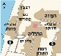

הפקעות ופגיעות תכנוניות במקרקעין
|
99-505 ד"ר יפעת הולצמן-גזית
|
 |
עדכון אחרון: 21/08/2007 12:01
לקורס הפקעות ופגיעות תכנוניות במקרקעין לתואר שני - לחץ כאן
תשס"ז:
מחברת קורס מצטברת - אילנית הרשקוביץ
תשס"ו:
סיכומי שיעור
תשס"ד:
מחברת קורס מצטברת - גולן - מבוסס על סיכום מאת מייקל הופמן ומורן לוזון
מבחנים משנים קודמות
תשס"ז - מועד א + פתרון בציון 95 - סיון שרעבי
תשס"ו - מועד א , פתרון בציון 97 - שירי בר